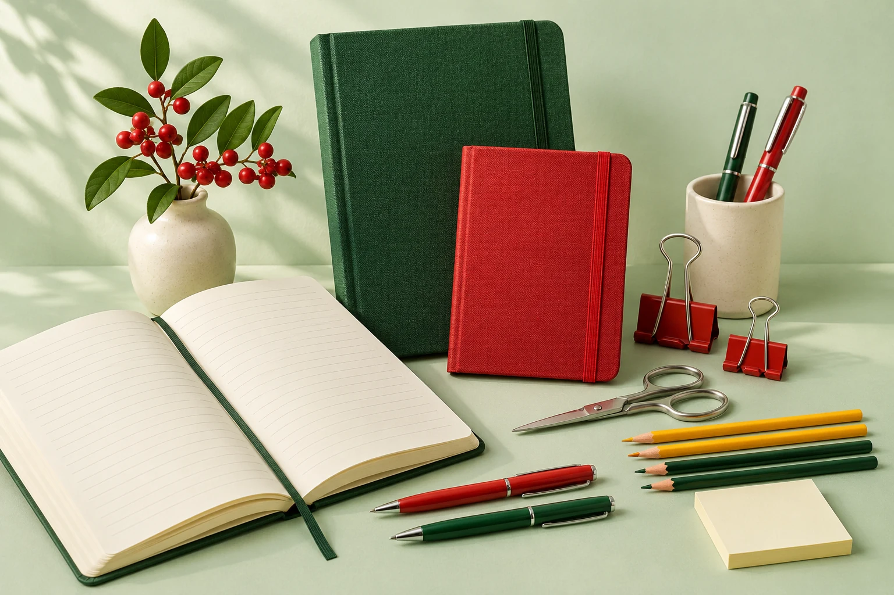

Carta
Carta per l’ufficio
Per stampare un documento, prendere nota o preparare una riunione.
Cosa annotare
Indica formato, grammatura desiderata e quantità. Per una carta specifica, annota anche l’uso previsto.
La scrivania, l’archivio, la prossima riunione. Raccogli qui quello che serve al tuo lavoro.

Categorie da esplorare. Articoli, varianti e disponibilità si verificano in negozio.
6 categorie da esplorare
Per stampare un documento, prendere nota o preparare una riunione.
Indica formato, grammatura desiderata e quantità. Per una carta specifica, annota anche l’uso previsto.
ArchivioDocumenti al loro posto, dal primo foglio all’ultimo progetto.
Indica formato dei documenti, numero di anelli o tipo di chiusura e quantità. Aggiungi una nota se cerchi una misura precisa.
 Scrivania
ScrivaniaPenne ed evidenziatori per le cose da segnare ogni giorno.
Colore dell’inchiostro, tipo di punta e quantità sono le indicazioni utili per una richiesta di cancelleria.

ScrivaniaLe piccole cose che aiutano a tenere insieme il lavoro.
Prepara una lista di fermagli, punti, nastro adesivo o altri accessori. Modelli e compatibilità vanno verificati prima dell’acquisto.
 Riunioni
RiunioniUn’idea in riunione. Una cosa da ricordare. Un appunto condiviso.
Specifica dimensioni, colore e quantità, se hai una preferenza. La lista aiuta a raccogliere le esigenze del tuo ufficio.
Etichette, separatori e idee per ritrovare quello che cerchi.
Descrivi il materiale da organizzare. Per etichette o accessori specifici, porta misure o riferimento del prodotto.
Prova un’altra ricerca oppure aggiungila liberamente alla tua lista.
Scrivi tu cosa cerchiTre punti di partenza da modificare.
Senza quantità o acquisti già decisi.
Penne, blocchi, note adesive e piccoli accessori.
Raccoglitori, cartelline, separatori ed etichette.
Appunti, penne e cartelline per tenere insieme le idee.